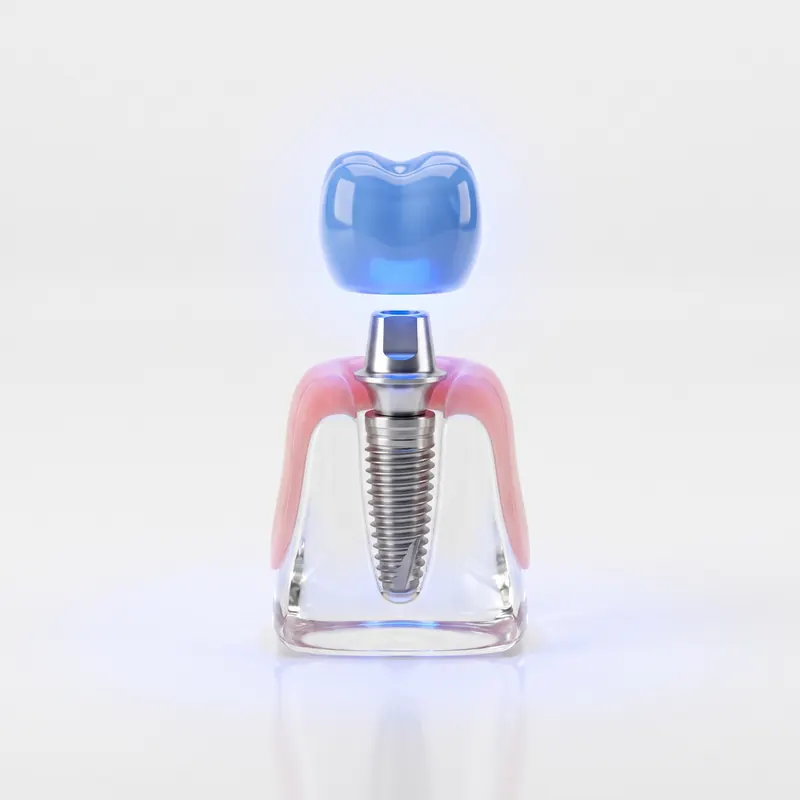
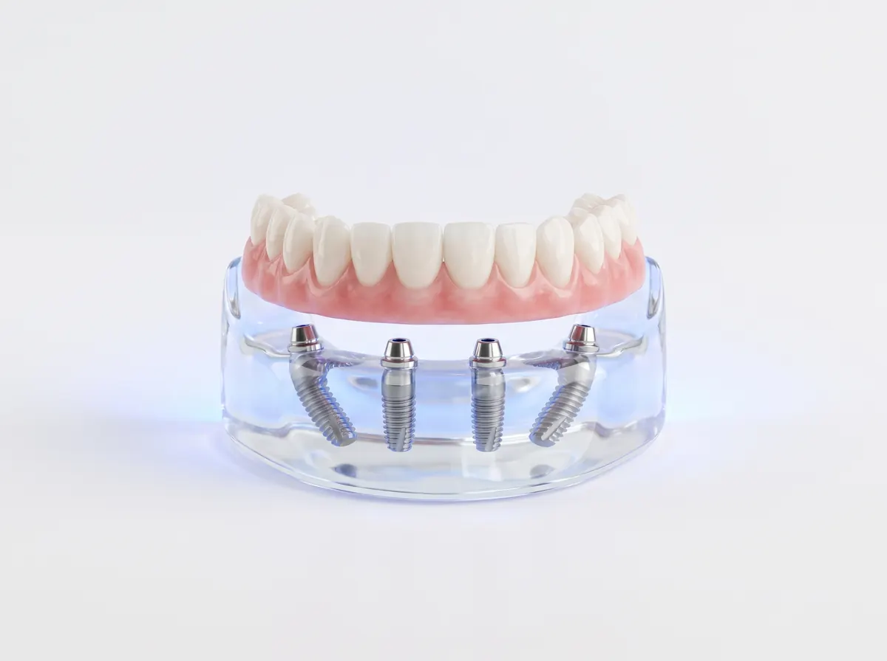
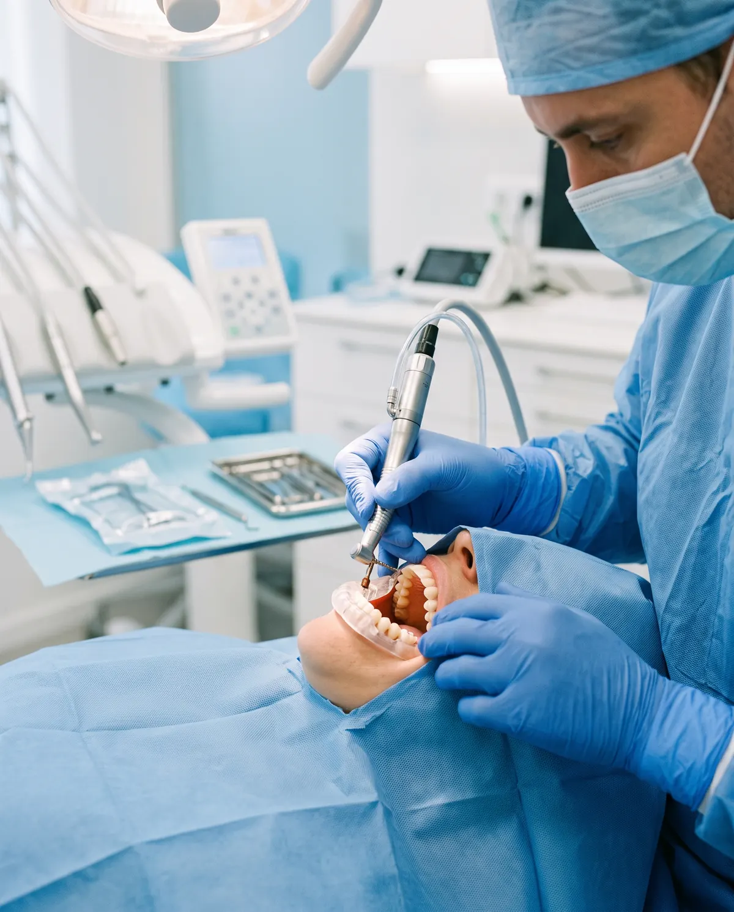
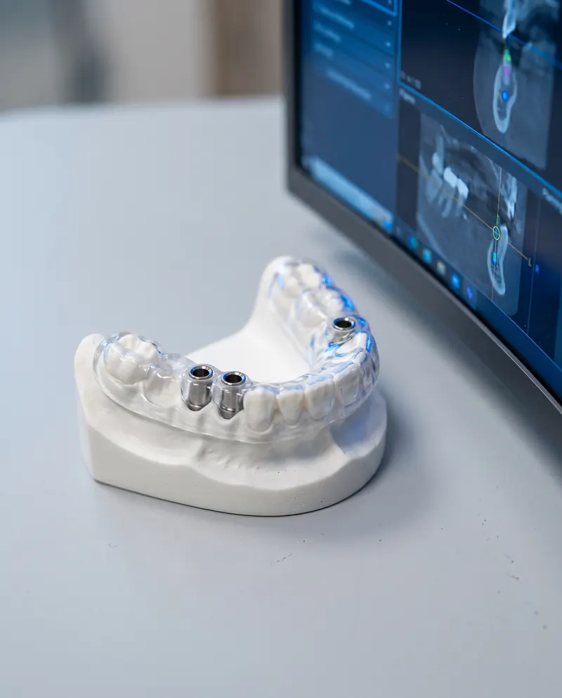
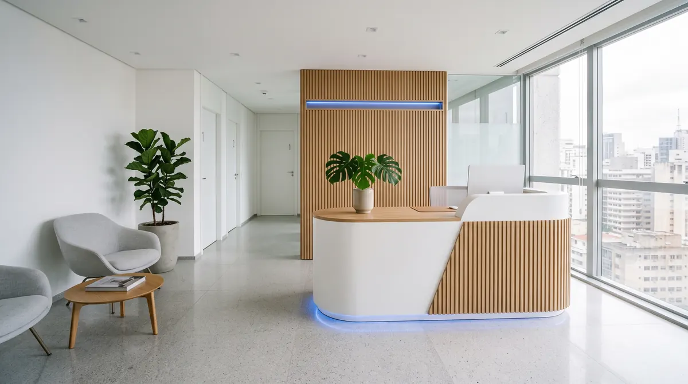

Implant Dentist · São Paulo
Dr. Henrique Salles
Implants, All-on-4 and guided surgery with digital planning. Precision that starts before the procedure.
- 18+ years of experience
- 400+ implants per year
Specialist in
Implant Dentistry
Certified in
guided surgery
What problems
bring patients to me
Didn't find your case? Every restoration starts with an assessment.
Book an assessment (opens WhatsApp)
Implants for every
clinical case
Every case calls for a technique. The recommendation comes after the assessment, with imaging and digital planning.

-
All-on-4
A full arch restored on 4 implants.
Recommended, after assessment, for people who have lost all or nearly all teeth in an arch. The fixed prosthesis is placed on four implants in strategic positions.
-
Immediate loading
A fixed temporary tooth right after surgery, when there is stability.
When the bone offers enough stability, the fixed temporary is placed right after the implant, instead of you going a period without teeth.
-
Guided surgery
3D digital planning before the procedure.
The CT scan and the mouth scan produce a custom surgical guide that directs the planned position of each implant.
-
Conventional implant
In two stages, for those who need more healing time.
The implant spends a few months integrating with the bone and only then receives the crown. This is usually the path when the bone needs more time.
Which one is right for you? That's decided in the assessment.
Talk about my caseWhen full restoration is the answer
For people who have lost all or nearly all teeth in an arch and want to chew and smile again with a fixed prosthesis.

A full arch of fixed teeth supported by four implants. The two in the back are tilted to make better use of the available bone.
- 4
- implants per arch
- 1
- fixed prosthesis on top of them
Fixed temporary, in many cases, right after surgery.
Most common indications
-
Lost all or nearly all teeth
A full arch can be restored on four implants.
-
Wears dentures that slip or hurt
The prosthesis is screwed onto the implants and isn't removed day to day.
-
Has compromised teeth that can't be saved
When indicated, extractions and implants are planned together.
-
Has little bone and wants to avoid extensive grafts, when possible
Tilted implants make use of the available bone in many cases.
-
Wants less time without teeth
In many cases, a fixed temporary is placed right after surgery.
The recommendation is only made after a clinical exam and CT scan.
From the first exam to your new smile
Four stages, each one explained before it happens. You know what comes next and why.

-
First appointment
Stage 1: Assessment and CT scan
A conversation, a clinical exam and a 3D CT scan to understand your case.
- Listening to your concerns, questions and expectations
- Clinical exam of the mouth, gums and bite
- 3D CT scan to assess the available bone
-

Before surgery
Stage 2: Digital planning
Each implant is positioned on the computer and becomes a custom surgical guide.
- Position, angle and depth defined in 3D
- Printed surgical guide for your arch
- The plan and next steps explained to you
-
Procedure day
Stage 3: Guided surgery
A precise procedure, with local anesthesia and, when indicated, sedation.
- The guide leads each implant to its planned position
- Fixed temporary on the same day, when indicated
- Clear instructions for the following days
-
After surgery
Stage 4: Prosthesis and follow-up
Prosthesis placement and scheduled follow-ups to look after the result.
- Prosthesis fitted to your bite and your smile
- Follow-up visits already scheduled
- Hygiene and maintenance guidance
It all starts with a conversation. You understand your case and the plan before deciding anything.
CRO-SP 000000 Clinical director
Who will take care of your smile
For more than 18 years, Dr. Henrique Salles has been dedicated to implant dentistry in São Paulo, focusing on implant restoration, All-on-4 and guided surgery. Every case begins with digital planning, and you understand every stage before deciding.
“A well-made implant is a well-planned implant.”
Education
- Specialization in Implant Dentistry
- Advanced training in guided surgery and immediate loading
- Ongoing training in oral rehabilitation
- 18+ years of experience
- 400+ implants per year
- 3D digital planning in every case
Appointments in Jardins São Paulo – SP
Frequently asked questions
What patients ask most before getting started. Straight answers, no runaround.
Still have a question?
Send your question on WhatsApp. The team replies during business hours.
The surgery is done under local anesthesia so you stay comfortable during the procedure. In the following days some discomfort is expected and is usually controlled with the prescribed medication and the written care instructions we give you.
It depends on the case: how many teeth, bone quality and the technique indicated. With immediate loading, when indicated, the temporary tooth is placed right after surgery. The final prosthesis comes after healing, which usually takes a few months.
In general, adults who have lost one or more teeth can be assessed for an implant. The recommendation depends on your overall health, the amount of bone and the imaging exams. That's why everything starts with a complete assessment.
In many cases, yes. When bone is missing, a graft can be done, or techniques that avoid grafting can be used, such as the tilted implants of All-on-4, when indicated. The CT scan shows which path makes sense for you.
Not necessarily. With controlled diabetes and medical follow-up, an implant may be indicated. Smoking increases the risk of healing complications, so we assess each case and advise how to reduce that risk before and after surgery.
The price depends on the planning for each case. At the assessment you receive the treatment plan and the quote.
With daily brushing, floss or an interdental brush, and maintenance visits at the recommended intervals. You receive hygiene guidance for your type of prosthesis, and the implant is monitored over time.
Your new smile starts with good planning.
At the assessment, Dr. Henrique examines your case, orders the necessary exams and calmly explains the treatment options.
Book an assessment
-
Hours
Mon–Fri · 8am–7pm Sat · 8am–12pm